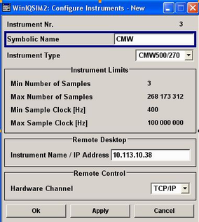
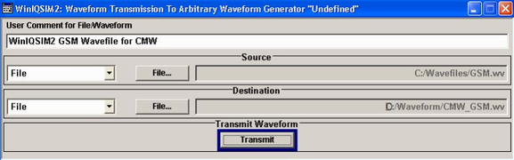

To generate and transfer a waveform file, proceed as follows:
Open WinIQSIM2.
Click "Transmission > Instruments" to open the "Configure Instruments" dialog.
If the R&S CMW does not appear in the list of "Available Instruments", click the "New" button to open the "Configure Instruments - New" dialog box.
In the dialog box:
Select the R&S CMW as "Instrument Type".
Assign a "Hardware Channel", depending on the existing connection.
Enter the address of the R&S CMW for the selected channel and (if desired) a "Symbolic Name".
The number of samples and allowed clock rates are displayed for information.

Click "OK" to close the dialog box.
Generate a waveform file with the desired properties following the instructions in the WinIQSIM2's manual.
Click "Transmission > Transmit".
In the dialog opened, select the generated waveform file as a source file, and a file name and location on the R&S CMW hard disk.

Tip: With an established connection between the PC and the tester, you can click the "File" button to view the existing waveform files on the hard disk.
Click "Transmit" to start file transmission.